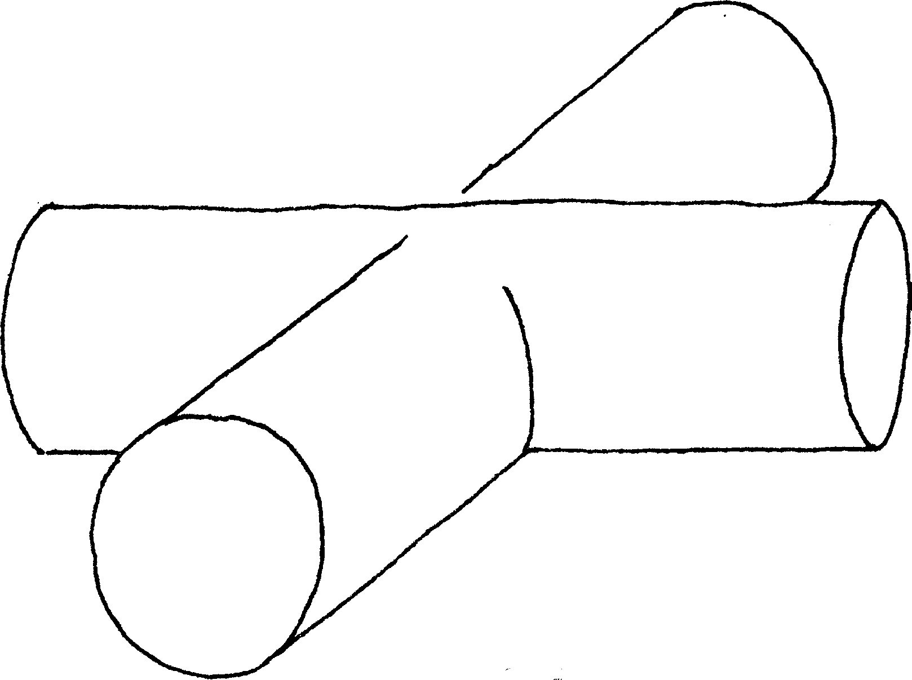
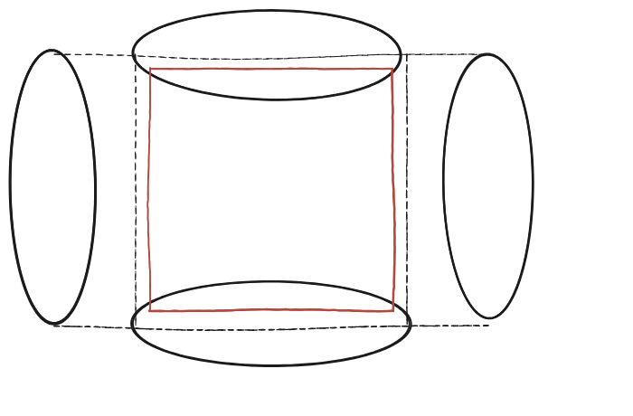

Suposa que dos cilindres idèntics es troben en angle recte. Quin aspecte té la seva intersecció, i quin volum té? I per a tres cilindres mútuament perpendiculars?

Què hem de produir
Una descripció de la forma —no és cap sòlid que ja tingui nom conegut— i el seu volum, en termes del radi r comú als dos cilindres.
Talla-ho amb un pla, com a Cavalieri
Es talla la intersecció amb un pla horitzontal, a una alçada y qualsevol per sobre del centre. Aquest pla talla cada cilindre en una franja rectangular d'amplada 2√(r²−y²) —el mateix Pitàgores que ja serveix per a la corda d'un cercle. La intersecció dels dos cilindres, en aquest pla, és on totes dues franges es superposen.
La construcció
On es superposen les dues franges rectangulars, marcades en sanguina: quina forma dibuixen —un cercle, o alguna altra cosa?

Tancar-ho
A cada alçada y, la secció de la intersecció no és un cercle: és un quadrat de costat 2√(r²−y²), perquè les dues franges, perpendiculars entre si, es tallen en un quadrat. Ara cal un sòlid conegut per comparar-hi, i triar-lo bé és tot el problema: no serveix el cilindre. Les seccions horitzontals d'un cilindre vertical són cercles de radi r sempre igual, mentre que aquests quadrats es van encongint amb l'alçada, i llavors la raó entre les dues piles no seria constant i Cavalieri no diria res.
El sòlid que sí que encaixa és l'esfera de radi r —justament la que queda inscrita dins de la intersecció, tangent als dos cilindres—, perquè la seva secció a l'alçada y és un cercle de radi √(r²−y²): el mateix √(r²−y²) que marca el costat del quadrat. Escrivint s = √(r²−y²), a cada alçada tenim un quadrat de costat 2s, d'àrea 4s², contra un cercle de radi s, d'àrea πs². La raó és 4/π, i —això és el que compta— no depèn de y.
Per Cavalieri, doncs, els volums estan en aquesta mateixa raó: V = (4/π)·(4/3)πr³ = (16/3)r³.
La intersecció de dos cilindres perpendiculars del mateix radi r —el sòlid de Steinmetz— té, a cada alçada, una secció quadrada, no circular. Comparant-la amb l'esfera inscrita, les seccions estan sempre en raó 4/π, i per Cavalieri els volums també: V = (4/π)·(4/3)πr³ = (16/3)r³.
Comprovació
r=1: volum = (16/3)r³ ≈ 5,33. Comparant amb el volum d'un sol cilindre de radi 1 i alçada 2: 2π ≈ 6,28 —la intersecció és menor, com cal esperar.
Per a tres cilindres mútuament perpendiculars, la intersecció ja no es pot tallar amb un sol argument de Cavalieri tan net com aquest: el seu volum queda, en aquest llibre, com a pregunta oberta per a qui vulgui anar-hi més enllà.